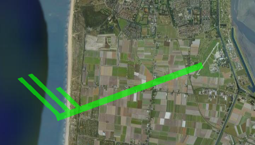

Visualization of 2D directional wind data using standard wind barb symbols to indicate speed and direction of the wind.
Visualization of 2D directional wind data using standard wind barb symbols to indicate speed and direction of the wind.

| kmlStr = ge_windbarb(X,Y,Z,U,V) |
| kmlStr = ge_windbarb(X,Y,Z,U,V,Parameter,Value) |
| kmlStr = ge_windbarb(X,Y,Z,U,V) |
Places Collada models of wind barbs at locations specified by "X" (longitude), "Y" (latitude), and "Z" (elevation). The direction of each arrow is determined from its components "U" (positive in the direction of positive longitude) and "V" (positive in the direction of positive latitude). The type of arrow is determined from the wind speed (vector length) and the hemisphere (see ge_barbdaes()). If "Z" is the same for all locations, it can be passed as a scalar.
| kmlStr = ge_windbarb(X,Y,Z,U,V,Parameter,Value) |
In addition to the above, this syntax also allows for specification of a number of parameters regarding the appearance of the data when viewed in Google Earth. Assigning values to the parameters can be accomplished by inclusion of an alternating sequence of parameters and their value. The table below provides an overview of the authorized options. The order in which the parameters are included does not matter. Please be aware that the options are case-sensitive. Examples are provided further down.
| Parameter | Description |
| 'altitudeMode' | Specifies which plane of reference to use. Must be one of 'absolute', 'relativeToGround' or 'clampToGround'. |
| 'arrowScale' | Scales the arrow, but allows for varying of the arrow length with fluctuations in vector components "U", "V", and "W". Default is 1. |
| 'msgToScreen' | Defines whether verbose feedback is provided by the function when it is accessed and when it finishes. Default is false (which is equivalent to logical(0), but quicker). |
| 'rLink' | This parameter defines the relative link between the location of the kml-file and the directory where the windbarb COLLADA models are located. For example, if our kml-file resides in a directory 'D:\googleearth\' together with two folders named 'red' and 'blue', respectively containing a set of red and blue windbarb collada models, the relative link would be 'blue\' to point to the set of blue barbs. |
| 'timeSpanStart' | See Dynamic visualization. |
| 'timeSpanStop' | See Dynamic visualization. |
Latitudes on the Southern hemisphere must be passed as negative values. Same for longitudes on the Western hemisphere.
Latitudes and longitudes should be passed in units of decimal degrees (also known as fractional degrees). Google Earth uses Simple Cylindrical projection (also known as Plate Carée) with a WGS84 datum. Altitudes must be passed in units of meters. Input parameters "U" and "V" must be passed to ge_windbarb in units of m/s.
Input variables "X", "Y", and "Z" define the origin of the arrows.
See the demo file demo_ge_windbarb for more details.
How to generate and display a windbarb representing a wind speed of 22.9504 knots coming in from a direction of 70.0169 degrees.
X = 4.778582; % longitude Y = 52.921329; % latitude Z = 100; % elevation U = 11; % wind speed vector x-component V = 4; % wind speed vector y-component % specify directory to store collada models: daeDir = ['daes',filesep]; % generate lime-colored collada models: ge_barbdaes('daeDir',daeDir,... 'barbColor','00FF00',... 'barbAlpha','A0') % place the right arrow at the right location: kmlStr = ge_windbarb(X,Y,Z,U,V,... 'rLink',daeDir,... 'arrowScale',5e3); %write the kmlStr to file: ge_output('denhelder.kml',kmlStr,... 'name','De Kooy airfield')
The above will yield the following when viewed in Google Earth:
